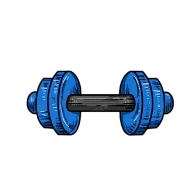

Dalang
本网页是写着玩的,不定时更新,里面可能会有我半夜发疯想的东西和一些记录啥啥啥的

本网页是写着玩的,不定时更新,里面可能会有我半夜发疯想的东西和一些记录啥啥啥的
这里是健身相关的内容。
本人其实高二才开始接触健身,之前曾经幻想当业余的长跑运动员,结果打球被狠狠地骨折制裁了从此一蹶不振改去健身
结果减脂减一半压力太大开始暴饮暴食,我的腹肌就仅仅生存了一周就没了,然后再也练不回来了
说真的我真的要被体测压力死了,我今年努努力看能不能明年争取拿个85以上,哦对了点下面的哑铃可以去我的健身板块

这里是碎碎念(待开发)
这里是日常记录(待开发)